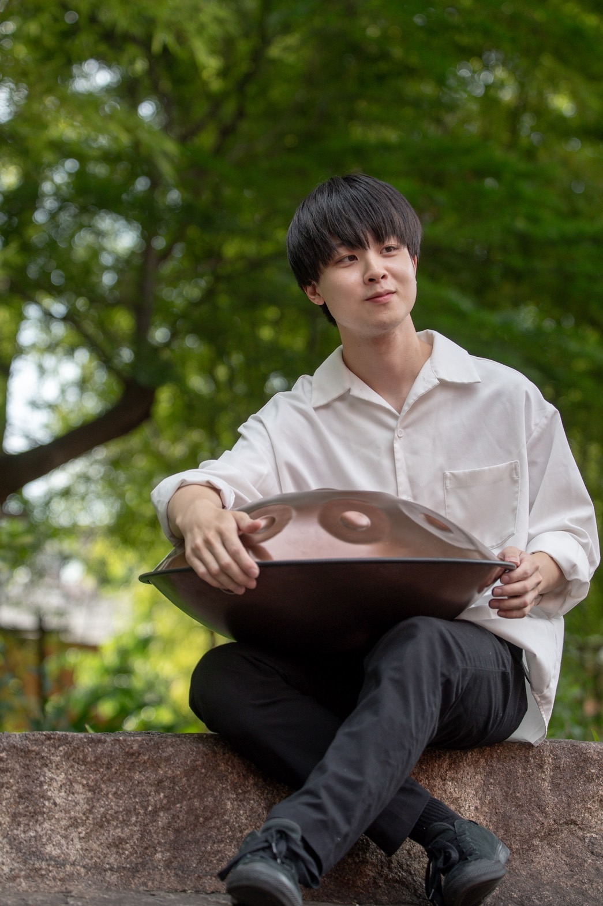

横谷 基
国立音楽大学作曲科卒。在学中より音と空間との新しい関係を求め、音楽集団「空間工作室」を結成。12音主義の開拓者であるウェーベルン、フランス印象主義音楽の象徴ともいえるドビュッシー、ラヴェルに傾倒。作曲、編曲と幅広く活躍している。
原田 雅美
野中 玲子
横谷 陽

阿部 拓也
高校の吹奏楽部にてドラム・パーカッションを始め、プロドラマーのもとで研鑽を積む。クラシックからジャズ、ロックまでジャンルを超えて幅広く活動する現役プレイヤー。三芳ウインドオーケストラ音楽監督、リトルピース・パーカッション代表。中学校・高校の吹奏楽部での指導実績多数。
米倉 恒
森田 章
6歳から15歳まで父親の仕事の都合により香港で過ごす。15歳からエレクトリックベースを弾き始め、ヘヴィーメタルのコピーバンドに加入。20歳よりコントラバスを始め、ジャムセッションに明け暮れる。ジャズを追求する中で横谷基氏（現・埼玉音楽院学院長）と出会い、横谷基トリオで活動する傍ら作曲・アレンジを師事。後に東邦音楽短期大学作曲科に入学しクラシックの基本を学ぶ。卒業時、大学推薦による読売新人演奏会にて作曲科の代表としてコントラバスソロ曲を自作自演。
宮下 桃実
大学在学中より、トロンボーン奏者としての活動と並行して、若手吹奏楽指導者として着実に実績を積み重ねている。平野由佳氏、藤田恵輔氏に師事し、トロンボーン演奏の研鑽を積む。現在は三芳ウインドオーケストラのトロンボーン奏者として、地域の音楽活動に積極的に参加。三芳中学校吹奏楽部、山村国際高校吹奏楽部での経験を礎に、次世代の育成に情熱を注ぐ。確かな技術の習得はもちろん、音楽の喜びや表現する楽しさを伝えることを大切にしており、生徒からの信頼も厚い。
後藤 理湖（Rico）
埼玉県三芳町出身。埼玉県立川越南高等学校を経て、日本大学芸術学部音楽学科作曲コース卒業。6歳よりフルートを始め、若土祥子、江田亮太の各氏に師事。16歳から伊藤弘之、横山基の各氏に作編曲法を学ぶ。
現在、「三芳ウインドオーケストラ」でフルート奏者兼専属アレンジャーを務めるほか、「Falls Meary（ふるまり）」「Mrks」などで編曲・演奏活動を行う。高校時代から吹奏楽編曲を始め、これまでに大編成からアンサンブルまで約150曲以上を手がける。
これまで、三芳町立藤久保中学校吹奏楽部による委嘱『ハウルの動く城』や、三芳さくらまつり「植樹式式典ファンファーレ」の作曲など、地域に根ざした音楽活動にも積極的に取り組む。

平山 幹大
12歳より打楽器を始め、現在、洗足学園音楽大学 打楽器コースに在学中。ヴィルトウオーゾ国際音楽コンクール2024 打楽器部門にてGOLD PRIZE（第1位）および最優秀若手打楽器奏者賞を受賞。さらに、ロンドンクラシカル音楽コンクール2023 打楽器部門 第2位、第89回TIAA全日本クラシック音楽コンサート 審査員賞、第12回下田国際音楽コンクール 第2位など、国内外のコンクールで高い評価を受けている。特にハンドパン奏者としては、楽器の持つ神秘的で澄んだ響きを活かしながら、確かな基礎力と豊かな音楽性を融合させた独自の世界観を展開。